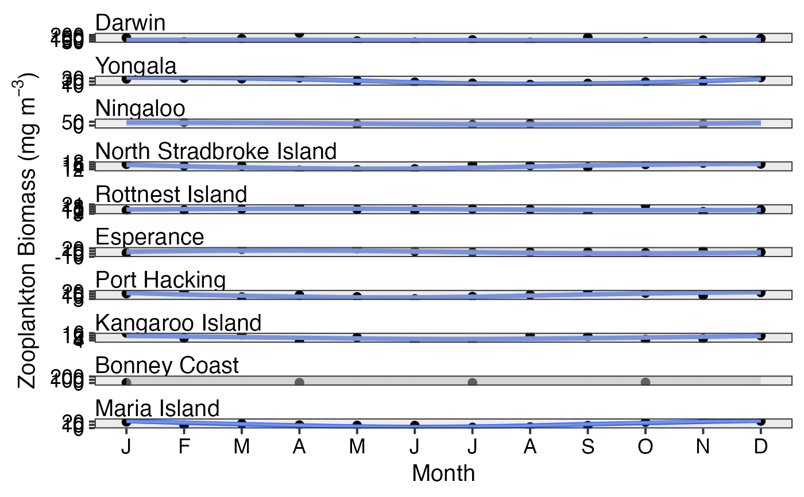
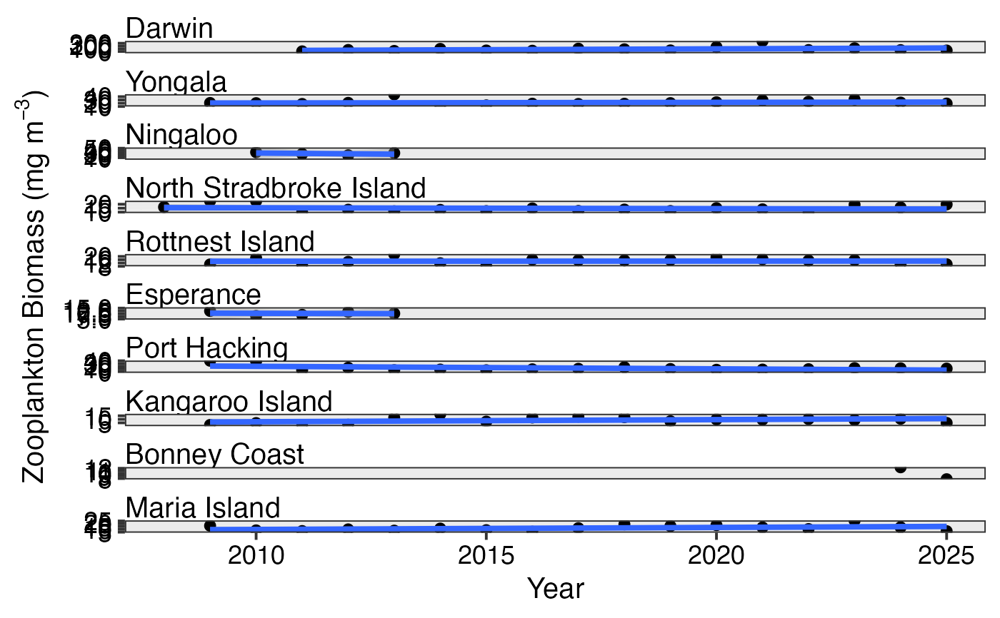
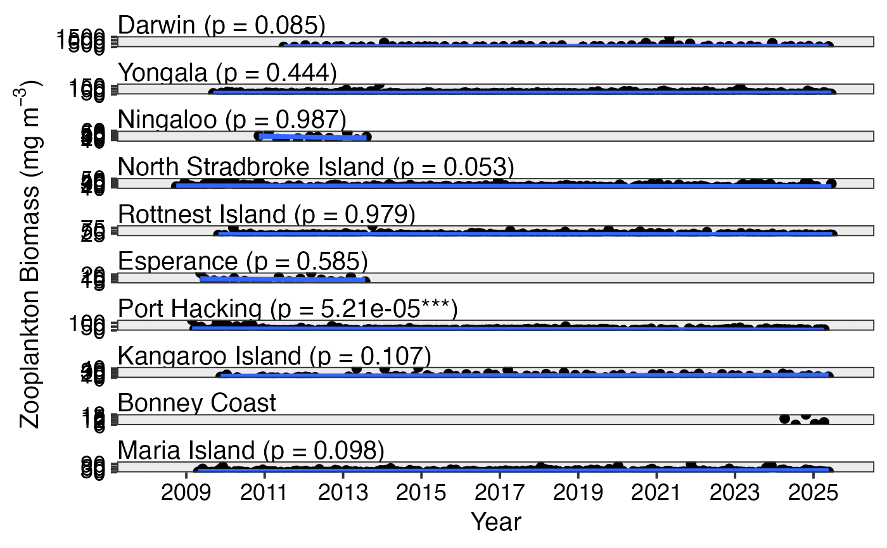

Plot temporal trends in plankton data with fitted lines
Source:R/plot_timeseries.R
pr_plot_Trends.RdCreate time series plots with fitted trend lines to examine long-term changes, seasonal patterns, or interannual variability in plankton indices. The function can plot raw data over time, monthly climatologies, or annual means.
pr_plot_Trends(df, Trend = "Raw", method = "lm", trans = "identity")Arguments
- df
A dataframe from
pr_get_Indices()containing timeseries data- Trend
The temporal scale for trend analysis:
"Raw"- Plot all data points over time with a trend line through the full timeseries"Month"- Monthly climatology showing seasonal patterns (averaged across years)"Year"- Annual means showing interannual variability
- method
Smoothing method for the trend line. Options include:
"lm"- Linear regression (default, good for detecting long-term trends)"loess"- Local polynomial regression (good for non-linear trends)"gam"- Generalised additive model (requires mgcv package)Any other method accepted by
ggplot2::geom_smooth()
- trans
Transformation for the y-axis scale:
"identity"- No transformation (default)"log10"- Log base 10 transformation (useful for abundance data)"sqrt"- Square root transformationAny other transformation accepted by
ggplot2::scale_y_continuous()
Value
A ggplot2 object showing the timeseries with fitted trend line(s)
Details
This function is designed to help identify temporal trends in plankton data:
Raw trends: Shows all observations over time with a smoothed trend line. Useful for detecting long-term changes (e.g., increasing or decreasing abundance).
Monthly trends: Aggregates data by month across all years to show seasonal patterns (e.g., winter blooms, summer stratification effects).
Annual trends: Shows year-to-year variability, useful for detecting regime shifts or responses to climate oscillations (e.g., ENSO).
The shaded ribbon around trend lines represents the 95% confidence interval. For NRS data, values are averaged across depths if present.
See also
pr_plot_TimeSeries() for plots without trend lines,
pr_plot_Climatology() for alternative climatology visualisations,
pr_get_model() for extracting model coefficients
Examples
# Examine long-term trends in zooplankton biomass
df <- pr_get_Indices("NRS", "Zooplankton") %>%
dplyr::filter(Parameters == "Biomass_mgm3") %>%
pr_model_data()
pr_plot_Trends(df, Trend = "Raw", method = "lm")
#> Warning: Removed 55 rows containing non-finite outside the scale range
#> (`stat_smooth()`).
#> Warning: Removed 56 rows containing missing values or values outside the scale range
#> (`geom_point()`).

# Examine seasonal patterns
pr_plot_Trends(df, Trend = "Month", method = "loess")
#> Warning: Removed 17 rows containing missing values or values outside the scale range
#> (`geom_point()`).

# Examine interannual variability
pr_plot_Trends(df, Trend = "Year", method = "lm")
#> Warning: Removed 1 row containing non-finite outside the scale range (`stat_smooth()`).
#> Warning: Removed 1 row containing missing values or values outside the scale range
#> (`geom_point()`).

# Use log transformation for abundance data
df <- pr_get_Indices("CPR", "Phytoplankton", near_dist_km = 250) %>%
dplyr::filter(Parameters == "PhytoAbundance_Cellsm3",
BioRegion %in% c("South-east", "Temperate East"))
pr_plot_Trends(df, Trend = "Raw", method = "lm", trans = "log10")
#> Warning: Removed 14694 rows containing non-finite outside the scale range
#> (`stat_smooth()`).
#> Warning: Removed 14694 rows containing missing values or values outside the scale range
#> (`geom_point()`).